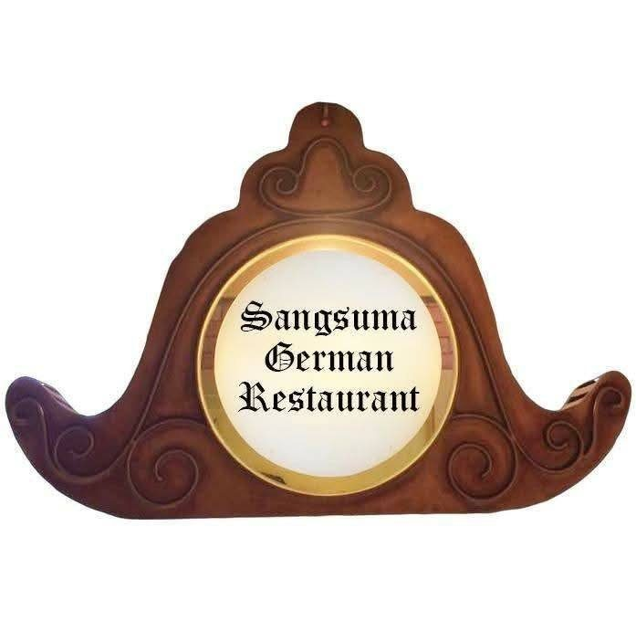
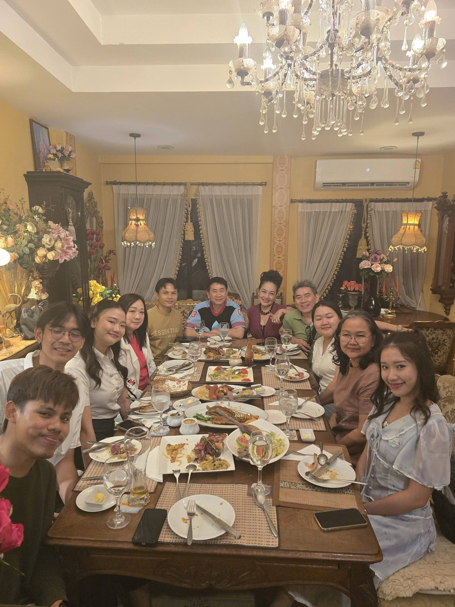
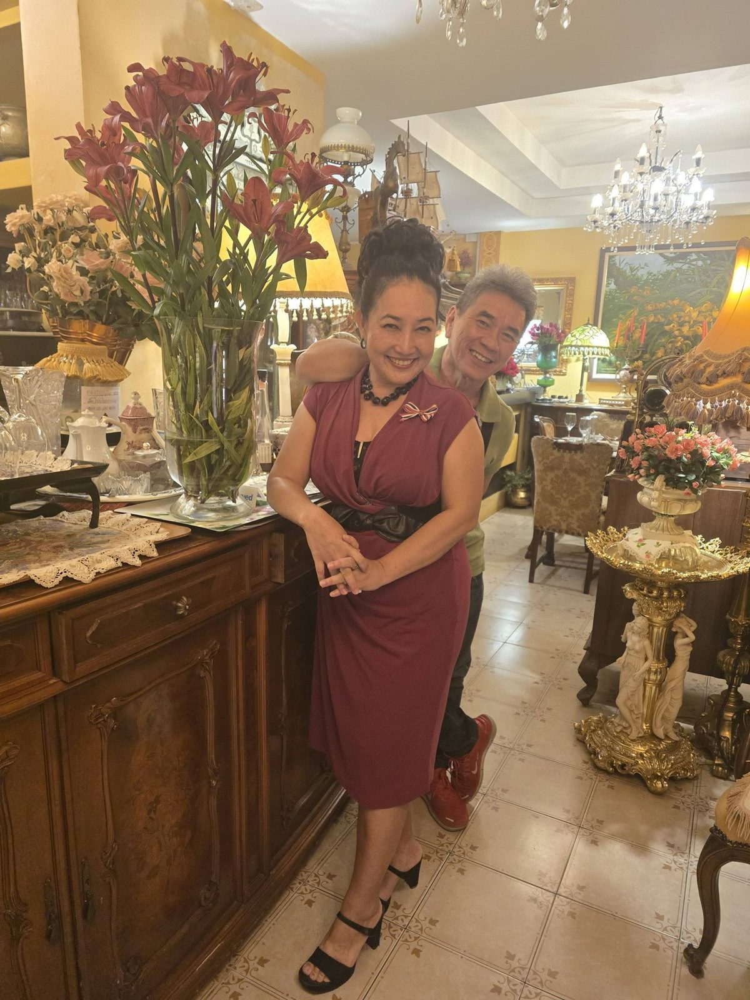

Sangsuma German Restaurant
เชฟตุ้ม · ร้านอาหารเยอรมัน แสงสุมา
Our story · เรื่องราวของเรา
Chef Toom has been cooking German food in Chiang Mai for many years, and many of our guests have become like family. One couple celebrated 44 years of marriage with us after more than 15 years of friendship.
We are on the Outer Ring Road towards City Hall, in Thanawan 4 village.


Sangsuma German Restaurant
แวะมาหาเราได้เลย · ร้านอาหารเยอรมัน แสงสุมา